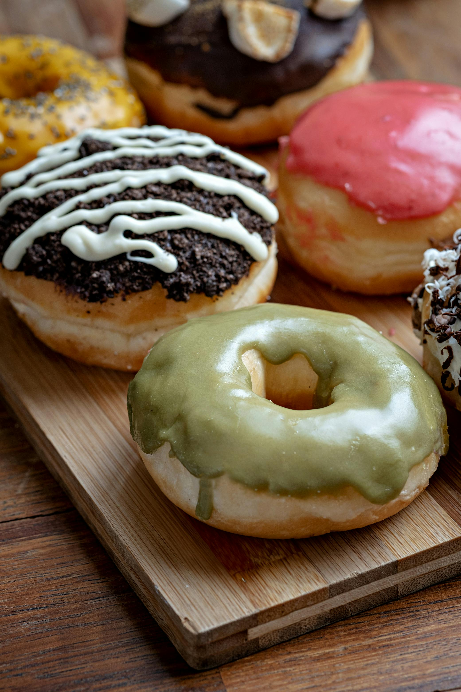

Bakery Basics
Recipes we highly reccomend you try!

This delicious citrusy dessert crepe is an amazing dessert for those who love
fruity flavors that
aren't too strong. However, this dessert can be a little advanced so it's recommended to be able to
make crepes on their own first. The cake is constructed carefully layer by layer with each
containing a cream frosting and crepe until it's the size of a normal cake. Lastly, you can choose
to garnish it with powdered sugar and spiraled limes or lime zest.

How to make homemade doughnuts that are slightly crispy on the outside and
beautifuly airy on the inside! These fluffy and airy homemade doughnuts are perfect for any
occasion! They’re extremely versatile
and can be made into millions of different flavors. You can start with a vanilla doughnut and create
different flavored glazes for a large selection of flavored doughnuts. The glaze is very easy to
make using 2 cups of powdered sugar ¼ cups of milk and ½ a teaspoon of whatever flavoring you want
to use. You can also choose to add food coloring if you want different colored doughnuts and then
all you’d have to do is mix the glaze and dip the doughnuts into them. Optionally you can also top
your doughnuts with sprinkles, fresh fruit, other desserts, cereal, or whatever else your heart
desires.

How to make our amazing, rich, and creamy chocolate stawberry cake! Chocolate
Strawberry cake is a perfect summer dessert, the flavor of the chocolate and the strawberry
work excellently together to create a beautiful symphony of flavors. There are so many ways to
create this absolutely delightful cake, you could make the cake strawberry and do chocolate mousse
or you can do chocolate cake and strawberry mousse, or do a mix of both. There are so many ways to
go about this cake but either way, it always turns out amazing and the perfect way to cool off on a
hot summer day especially when the cake is chilled.

If you love the taste of tropical fruits, you'll love this mango cupcake
recipe! Mango Cupcakes are the perfect harmony of tropical and comforting cake, personally as a
fruit and
mango lover these cupcakes are to die for. The way the flavor of the mango perfectly compliments the
texture of the sponge cake is incredible. Not to mention the diced mangos that filled the cupcake
itself along with the subtle mango-flavored buttercream. The important part of tropical flavored
cakes is to not overdo the flavoring which is why it’s much better to use actual fruit instead of
artificial flavorings in these cakes.